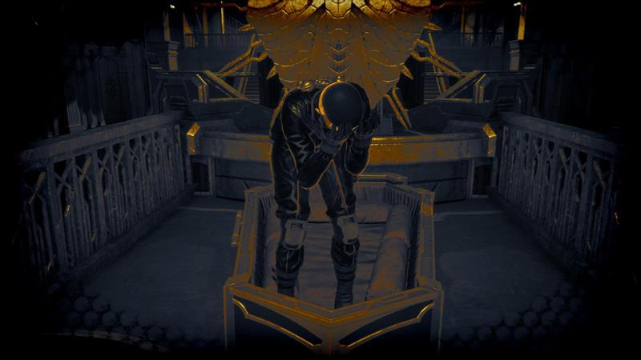
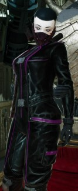

Gallery



"It... HURTS! You... you did this. Hurt... me. Why...? WHY!?"
Many files have been classified in the Vanguard, so not much is known about any of the operatives' outside lives. The Pink Dove is the most peculiar of the Vanguard Operatives. As she is not a human, being an android similar to Nailtheim's CYN. She is the head of Medical operations, which is strange considering her robotic nature. And she seems to be the most unstable as reports say she's been seen having mental breakdowns, which can't be right as she's an android. But these were always outside of her operations. She sometimes joins combat as a field medic employing a spear, and uses poison at the enemy, which takes out any of the human combatants. Despite her strange nature, President Cloud of Alforna seems to have a lot of faith in her, while The Blade seems much more distant with her, well, more distant than she normally is.

